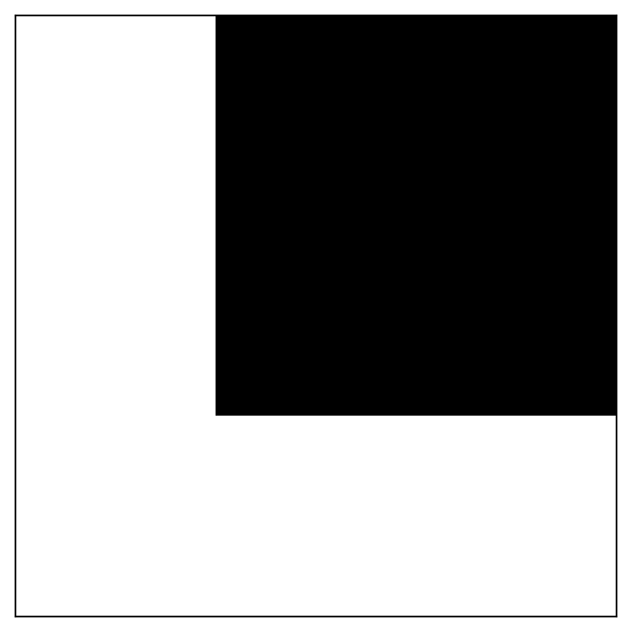
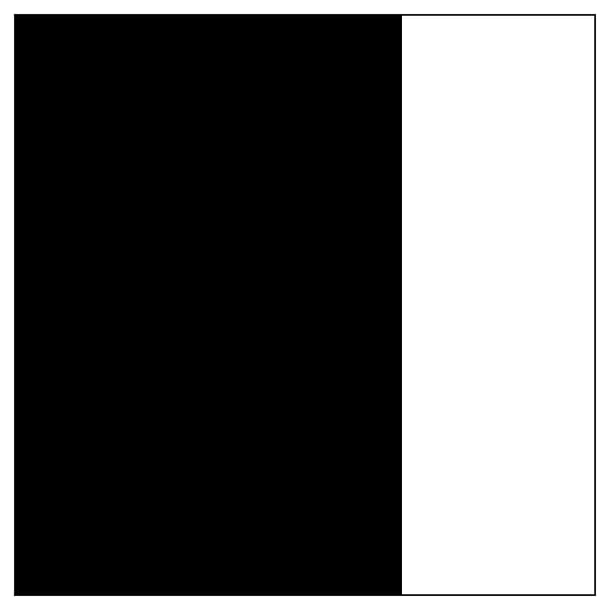
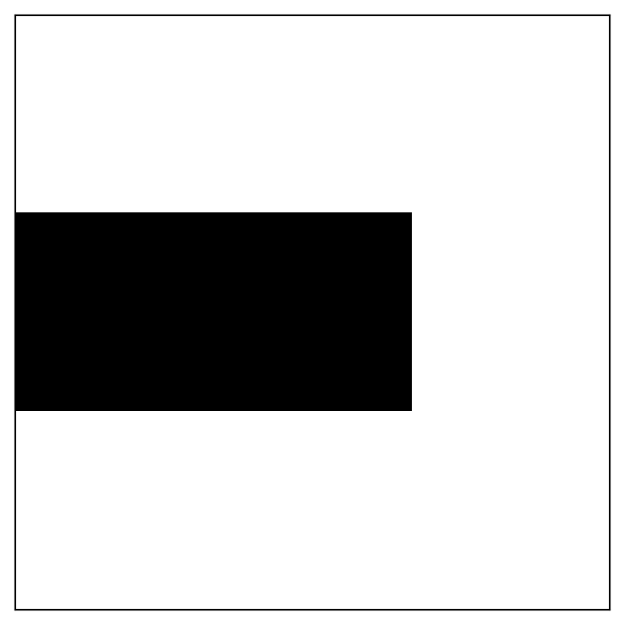
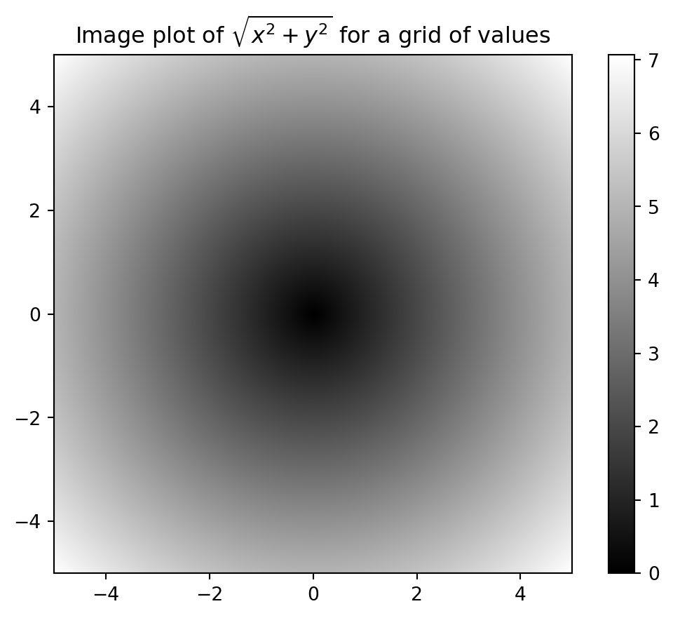
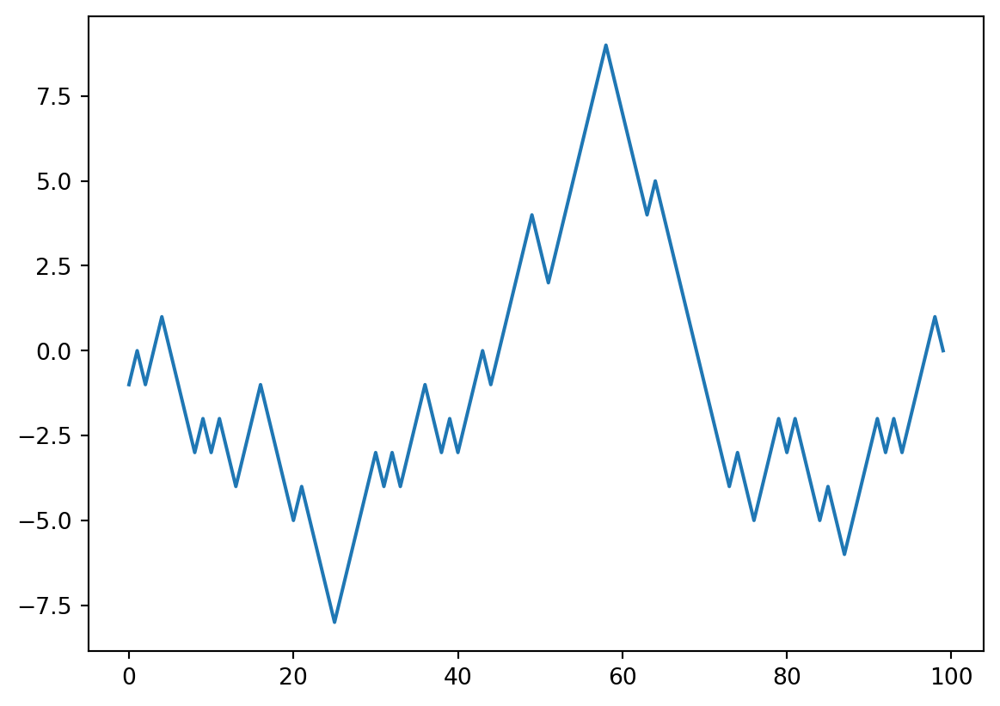

import numpy as np # 导入 NumPy 库，并将其命名为 np
my_arr = np.arange(1_000_000) # 创建一个包含 0 到 999,999 的 NumPy 数组
my_list = list(range(1_000_000)) # 创建一个包含 0 到 999,999 的 Python 列表Python 数据分析
第 4 章 NumPy 基础：数组和向量化计算
NumPy 简介
NumPy，全称 Numerical Python，是 Python 中用于数值计算的基础包。
为什么 NumPy 很重要？ 🧐 许多科学计算包都依赖 NumPy 的数组对象进行数据交换。可以把它看作是 Python 数据分析的通用语言。
NumPy 专为高效处理大型数据数组而设计。
我们将学到什么？ 我们将涵盖 NumPy 的基础知识，重点关注 NumPy 如何实现快速的、面向数组的操作，这对于使用 pandas 等库进行数据分析至关重要。
NumPy 的关键特性
以下是 NumPy 提供的主要功能：
- ndarray: NumPy 的核心。一种高效的多维数组。可以把它想象成一个容器，里面装着相同类型的数据（例如，全是数字）。它允许快速操作和广播（稍后会介绍！）。
- 数学函数: 一套丰富的函数，可以对整个数组进行操作，无需显式循环。这被称为向量化，它比在 Python 中编写循环要快得多。
- 数据 I/O: 用于将数组数据读写到磁盘的工具。
- 线性代数: 线性代数、随机数生成和傅里叶变换的功能。这些是许多科学和工程任务的基本工具。
- C API: 允许与用 C、C++ 或 FORTRAN 编写的库无缝集成。这是利用高性能遗留代码的关键。
为什么 NumPy 高效？
NumPy 的效率源于以下几个设计选择：
连续内存: 与 Python 列表不同，NumPy 数组将数据存储在单个连续的内存块中。这使得访问和操作数据更快。
基于 C 的算法: 许多 NumPy 操作都是用 C 实现的，避免了 Python 解释器的开销。
更少的内存使用: NumPy 数组通常比 Python 列表消耗更少的内存，特别是对于数值数据。
NumPy vs. Python 列表：性能对决 🏃♂️
让我们看看 NumPy 的速度优势。我们将比较使用 NumPy 数组和 Python 列表将一百万个整数乘以 2 的速度：
NumPy vs. Python 列表：计时操作
现在，进行计时操作：
NumPy 数组操作：
# %timeit my_arr2 = my_arr * 2 # 使用 %timeit 魔法命令测量 NumPy 数组操作的时间NumPy vs. Python 列表：计时（续）
Python 列表操作（使用列表推导式）：
# %timeit my_list2 = [x * 2 for x in my_list] # 使用 %timeit 测量 Python 列表推导式的时间基于 NumPy 的算法通常比纯 Python 算法快 10 到 100 倍（或更多），并且使用的内存显著减少。
NumPy ndarray：深入了解
ndarray（N 维数组）是 NumPy 中的核心数据结构。
同质数据: ndarray 中的所有元素必须具有相同的数据类型（例如，全是整数，全是浮点数）。
关键属性:
shape: 一个元组，表示每个维度的大小。对于 2x3 数组，形状将是(2, 3)。dtype: 一个描述元素数据类型（例如，int64、float32）的对象。
创建 ndarray: 创建数组的最简单方法是使用
array函数。它接受任何类似序列的对象（包括其他数组），并生成一个新的 NumPy 数组。
创建 ndarray：示例（从列表）
让我们创建一些数组：
import numpy as np # 导入 NumPy
# 从列表创建
data1 = [6, 7.5, 8, 0, 1] # 一个 Python 列表
arr1 = np.array(data1) # 使用 np.array 将列表转换为 NumPy 数组
print(arr1) # 打印数组
print(arr1.dtype) # 打印数组的数据类型[6. 7.5 8. 0. 1. ]
float64创建 ndarray：示例（从嵌套列表）
# 从嵌套列表创建（创建一个二维数组）
data2 = [[1, 2, 3, 4], [5, 6, 7, 8]] # 一个嵌套的 Python 列表
arr2 = np.array(data2) # 将嵌套列表转换为 NumPy 二维数组
print(arr2)
print(arr2.ndim) # 打印数组的维度数
print(arr2.shape) # 打印数组的形状
print(arr2.dtype) # 打印数组的数据类型[[1 2 3 4]
[5 6 7 8]]
2
(2, 4)
int64数组创建函数：Zeros
NumPy 提供了几个方便的函数来创建数组：
# 创建全零数组
import numpy as np # 导入 NumPy
zeros_arr = np.zeros(10) # 创建一个包含 10 个零的一维数组
print(zeros_arr)
zeros_arr_2d = np.zeros((3, 6)) # 创建一个 3x6 的二维全零数组
print(zeros_arr_2d)[0. 0. 0. 0. 0. 0. 0. 0. 0. 0.]
[[0. 0. 0. 0. 0. 0.]
[0. 0. 0. 0. 0. 0.]
[0. 0. 0. 0. 0. 0.]]数组创建函数：Ones 和 Empty
# 创建全一数组
ones_arr = np.ones((2, 3)) # 创建一个 2x3 的二维全一数组
print(ones_arr)[[1. 1. 1.]
[1. 1. 1.]]# 创建未初始化的数组（可能包含垃圾值）
empty_arr = np.empty((2, 3, 2)) # 创建一个 2x3x2 的三维数组，值未初始化
print(empty_arr)[[[6.93427194e-310 4.92612326e-315]
[0.00000000e+000 1.93831270e-267]
[5.28506394e-308 1.40406108e-309]]
[[6.88627662e-282 1.34164568e-301]
[8.79425391e-297 1.39069241e-309]
[5.56570107e-307 1.85274617e-321]]]数组创建函数：Arange
# 'arange': 类似于 Python 的 'range'，但返回一个 ndarray
range_arr = np.arange(15) # 创建一个包含 0 到 14 的一维数组
print(range_arr)[ 0 1 2 3 4 5 6 7 8 9 10 11 12 13 14]数组创建函数总结
下表总结了常见的数组创建函数：
| 函数 | 描述 |
|---|---|
array |
将输入数据（列表、元组、数组等）转换为 ndarray。 |
asarray |
类似于 array，但如果输入已经是 ndarray，则不复制。 |
arange |
类似于 Python 的 range，但返回 ndarray。 |
数组创建函数总结（续）
| 函数 | 描述 |
|---|---|
ones, ones_like |
创建全 1 数组。ones_like 接受另一个数组，并创建一个形状和 dtype 相同的全 1 数组。 |
zeros, zeros_like |
类似于 ones 和 ones_like，但创建全 0 数组。 |
empty, empty_like |
创建未初始化值的数组。谨慎使用！ |
数组创建函数总结（续）
| 函数 | 描述 |
|---|---|
full, full_like |
创建一个用指定值填充的数组。full_like 接受另一个数组并使用其形状和 dtype。 |
eye, identity |
创建一个正方形单位矩阵（对角线上为 1，其他地方为 0）。 |
数据类型 (dtypes)
什么是 dtype？ 一个特殊的对象，包含有关 ndarray 所持有的数据类型的信息（例如，
float64、int32、bool）。为什么 dtype 很重要？ 它们使您可以精细地控制数据在内存中的存储方式。这对于性能至关重要，尤其是在处理大型数据集时。它们还允许 NumPy 与数据接口。
数据类型：指定 dtypes
指定 dtypes：
import numpy as np # 导入 NumPy
arr1 = np.array([1, 2, 3], dtype=np.float64) # 显式设置 dtype 为 float64
arr2 = np.array([1, 2, 3], dtype=np.int32) # 显式设置 dtype 为 int32
print(arr1.dtype) # 打印 arr1 的 dtype
print(arr2.dtype) # 打印 arr2 的 dtypefloat64
int32常见的 NumPy 数据类型
| 类型 | 类型代码 | 描述 |
|---|---|---|
int8, uint8 |
i1, u1 |
有符号和无符号 8 位（1 字节）整数类型 |
int16, uint16 |
i2, u2 |
有符号和无符号 16 位整数类型 |
int32, uint32 |
i4, u4 |
有符号和无符号 32 位整数类型 |
int64, uint64 |
i8, u8 |
有符号和无符号 64 位整数类型 |
常见的 NumPy 数据类型（续）
| 类型 | 类型代码 | 描述 |
|---|---|---|
float16 |
f2 |
半精度浮点数 |
float32 |
f4 或 f |
标准单精度浮点数；与 C float 兼容 |
float64 |
f8 或 d |
标准双精度浮点数；与 C double 和 Python float 兼容 |
float128 |
f16 或 g |
扩展精度浮点数 |
常见的 NumPy 数据类型（续）
| 类型 | 类型代码 | 描述 |
|---|---|---|
complex64, complex128, complex256 |
c8, c16, c32 |
分别由两个 32、64 或 128 位浮点数表示的复数 |
bool |
? |
布尔类型，存储 True 和 False 值 |
object |
O |
Python 对象类型；值可以是任何 Python 对象 |
string_ |
S |
固定长度的 ASCII 字符串类型（每个字符 1 个字节）。使用 S10 表示长度为 10 的字符串。 |
unicode_ |
U |
固定长度的 Unicode 类型（字节数取决于平台） |
既有有符号整数类型，也有无符号整数类型。有符号整数可以表示正整数和负整数，而无符号整数只能表示非负整数。
使用 astype 进行类型转换：整数到浮点数
什么是类型转换？ 将数组从一种 dtype 转换为另一种 dtype。
如何进行类型转换: 使用
astype方法。astype总是创建一个新数组（数据的副本），即使新的 dtype 与旧的 dtype 相同。
import numpy as np # 导入 NumPy
arr = np.array([1, 2, 3, 4, 5]) # 创建一个整数数组
print(arr.dtype) # 打印原始 dtype
float_arr = arr.astype(np.float64) # 将整数数组转换为浮点数数组
print(float_arr.dtype) # 打印转换后的 dtypeint64
float64使用 astype 进行类型转换：字符串到浮点数
# `np.string_` 在 NumPy 2.0 版本中已移除。请改用 `np.bytes_`。
numeric_strings = np.array(['1.25', '-9.6', '42'], dtype=np.bytes_) # 创建一个包含字符串的数组
float_arr = numeric_strings.astype(float) # 将字符串数组转换为浮点数数组
print(float_arr) # 打印转换后的数组[ 1.25 -9.6 42. ]使用 numpy.string_ 类型时要小心，因为 NumPy 中的字符串数据是固定大小的，可能会截断输入而不发出警告。
NumPy 数组的算术运算：向量化
向量化: NumPy 中的一个核心概念。它意味着对整个数组执行操作，无需编写显式的
for循环。这更快、更简洁。逐元素操作: 等大小数组之间的算术运算是逐元素应用的：
arr = np.array([[1., 2., 3.], [4., 5., 6.]]) # 创建一个二维数组
print(arr * arr) # 逐元素乘法
print(arr - arr) # 逐元素减法[[ 1. 4. 9.]
[16. 25. 36.]]
[[0. 0. 0.]
[0. 0. 0.]]NumPy 数组的算术运算：与标量的运算
- 与标量的运算: 与标量的算术运算会将标量值传播到数组中的每个元素：
print(1 / arr) # 每个元素除以 1
print(arr ** 2) # 每个元素平方[[1. 0.5 0.33333333]
[0.25 0.2 0.16666667]]
[[ 1. 4. 9.]
[16. 25. 36.]]广播（简要介绍）
什么是广播？ 一种强大的机制，允许 NumPy 在某些条件下对不同形状的数组执行算术运算。
示例: 您可以将标量添加到任何形状的数组。标量实际上被“拉伸”以匹配数组的形状。
我们稍后会更详细地介绍广播。现在，只需知道它的存在即可。
基本索引和切片
- 类似于 Python 列表: 一维 NumPy 数组的索引和切片方式与 Python 列表非常相似：
import numpy as np # 导入 NumPy
arr = np.arange(10) # 创建一个包含 0 到 9 的数组
print(arr[5]) # 访问索引 5 处的元素
print(arr[5:8]) # 对索引 5 到 8（不包括 8）的元素进行切片
arr[5:8] = 12 # 将一个值赋给一个切片
print(arr) # 打印修改后的数组5
[5 6 7]
[ 0 1 2 3 4 12 12 12 8 9]基本索引和切片：视图 vs. 副本
- 视图 vs. 副本: 数组切片是原始数组上的视图。这意味着修改切片将修改原始数组。这与 Python 列表不同。
arr_slice = arr[5:8] # 创建一个切片
arr_slice[1] = 12345 # 修改切片
print(arr) # 原始数组也被修改！[ 0 1 2 3 4 12 12345 12 8 9]如果您想要 ndarray 切片的副本而不是视图，则需要显式复制该数组 - 例如，arr[5:8].copy()。
索引和切片：更高维度（二维数组）
- 二维数组: 您可以使用逗号分隔的索引来访问元素：
arr2d = np.array([[1, 2, 3], [4, 5, 6], [7, 8, 9]]) # 创建一个二维数组
print(arr2d[2]) # 访问第三行（索引 2）
print(arr2d[0][2]) # 访问第 0 行第 2 列的元素（两种方式）
print(arr2d[0, 2]) # 访问第 0 行第 2 列的元素[7 8 9]
3
3索引和切片：更高维度（轴）
- 关于轴的概念:
- 轴 0: 行
- 轴 1: 列
NumPy 数组中的元素索引。
graph LR
subgraph "Axis 0 (Rows)"
0 --> 1
1 --> 2
end
subgraph "Axis 1 (Columns)"
0 --> 0[0,0]
0 --> 1[0,1]
0 --> 2[0,2]
1 --> 3[1,0]
1 --> 4[1,1]
1 --> 5[1,2]
2 --> 6[2,0]
2 --> 7[2,1]
2 --> 8[2,2]
end
索引和切片：更高维度（多维切片）
- 多维切片:
print(arr2d[:2]) # 选择前两行
print(arr2d[:2, 1:]) # 选择前两行，以及索引 1 及之后的列[[1 2 3]
[4 5 6]]
[[2 3]
[5 6]]索引和切片：更高维度（混合整数索引和切片）
- 混合整数索引和切片:
print(arr2d[1, :2]) # 选择第二行，前两列（较低维度的切片）
print(arr2d[:2, 2]) # 选择前两行，第三列[4 5]
[3 6]索引和切片：更高维度（冒号表示整个轴）
- 冒号表示整个轴:
print(arr2d[:, :1]) # 选择所有行，但只选择第一列[[1]
[4]
[7]]二维数组切片：arr[:2,1:]
| 表达式 | 形状 |
|---|---|
arr[:2,1:] |
(2,2) |

二维数组切片：arr[2]
| 表达式 | 形状 |
|---|---|
arr[2] |
(3,) |

二维数组切片：arr[2,:]
| 表达式 | 形状 |
|---|---|
arr[2,:] |
(3,) |

二维数组切片：arr[2:,:]
| 表达式 | 形状 |
|---|---|
arr[2:,:] |
(1,3) |
二维数组切片：arr[:, :2]
| 表达式 | 形状 |
|---|---|
arr[:, :2] |
(3,2) |

二维数组切片：arr[1, :2]
| 表达式 | 形状 |
|---|---|
arr[1, :2] |
(2,) |

二维数组切片：arr[1:2, :2]
| 表达式 | 形状 |
|---|---|
arr[1:2, :2] |
(1,2) |

布尔索引：创建布尔数组
- 概念: 根据布尔数组选择数据。布尔数组通常与您要索引的数组具有相同的形状。
import numpy as np # 导入 NumPy
names = np.array(['Bob', 'Joe', 'Will', 'Bob', 'Will', 'Joe', 'Joe']) # 创建一个包含名字的数组
data = np.array([[4, 7], [0, 2], [-5, 6], [0, 0], [1, 2],
[-12, -4], [3, 4]]) # 创建一个数据数组
print(names == 'Bob') # 创建一个布尔数组，指示哪些名字是 'Bob'[ True False False True False False False]布尔索引：选择行
print(data[names == 'Bob']) # 选择名字为 'Bob' 的对应行[[4 7]
[0 0]]布尔索引：与切片/索引结合
print(data[names == 'Bob', 1:]) # 选择名字为 'Bob' 的对应行，以及索引 1 及之后的列
print(data[names != 'Bob']) # 选择名字不是 'Bob' 的对应行[[7]
[0]]
[[ 0 2]
[ -5 6]
[ 1 2]
[-12 -4]
[ 3 4]]布尔索引：逻辑运算符
- 逻辑运算符:
~: 对布尔数组取反（类似于not）&: 组合条件（类似于and）|: 组合条件（类似于or）
mask = (names == 'Bob') | (names == 'Will') # 创建一个掩码，选择名字为 'Bob' 或 'Will' 的行
print(data[mask]) # 使用掩码选择数据[[ 4 7]
[-5 6]
[ 0 0]
[ 1 2]]Python 关键字 and 和 or 不适用于布尔数组。请改用 & (and) 和 | (or)。
花式索引：选择特定行
- 概念: 使用整数数组进行索引。允许您选择特定的行或列，甚至重新排列它们。
import numpy as np # 导入 NumPy
arr = np.zeros((8, 4)) # 创建一个 8x4 的全零数组
for i in range(8): # 循环遍历每一行
arr[i] = i # 将每一行的值设置为行号
print(arr)
print(arr[[4, 3, 0, 6]]) # 按指定顺序选择第 4、3、0 和 6 行[[0. 0. 0. 0.]
[1. 1. 1. 1.]
[2. 2. 2. 2.]
[3. 3. 3. 3.]
[4. 4. 4. 4.]
[5. 5. 5. 5.]
[6. 6. 6. 6.]
[7. 7. 7. 7.]]
[[4. 4. 4. 4.]
[3. 3. 3. 3.]
[0. 0. 0. 0.]
[6. 6. 6. 6.]]花式索引：选择特定元素
arr = np.arange(32).reshape((8, 4)) # 创建一个 8x4 的数组，值为 0 到 31
print(arr[[1, 5, 7, 2], [0, 3, 1, 2]]) # 选择元素 (1, 0), (5, 3), (7, 1), (2, 2)[ 4 23 29 10]花式索引：选择矩形区域
print(arr[[1, 5, 7, 2]][:, [0, 3, 1, 2]]) # 选择第 1、5、7、2 行，并重新排列列的顺序[[ 4 7 5 6]
[20 23 21 22]
[28 31 29 30]
[ 8 11 9 10]]- 重要提示: 与切片不同，花式索引总是将数据复制到新数组中。
转置数组和交换轴
- 转置: 通过交换行和列来重新排列数据。使用
.T属性或transpose方法。
arr = np.arange(15).reshape((3, 5)) # 创建一个 3x5 的数组
print(arr) # 打印原始数组
print(arr.T) # 转置数组[[ 0 1 2 3 4]
[ 5 6 7 8 9]
[10 11 12 13 14]]
[[ 0 5 10]
[ 1 6 11]
[ 2 7 12]
[ 3 8 13]
[ 4 9 14]]转置数组：矩阵乘法
- 矩阵乘法: 使用
np.dot或@运算符进行矩阵乘法。
arr = np.array([[0, 1, 0], [1, 2, -2], [6, 3, 2], [-1, 0, -1], [1, 0, 1]]) # 创建一个数组
print(np.dot(arr.T, arr)) # 矩阵乘法
print(arr.T @ arr) # 使用 @ 运算符进行矩阵乘法[[39 20 12]
[20 14 2]
[12 2 10]]
[[39 20 12]
[20 14 2]
[12 2 10]]转置数组：交换轴
- 交换轴:
swapaxes方法接受一对轴编号并交换指定的轴。
print(arr.swapaxes(0, 1)) # 交换轴 0 和轴 1[[ 0 1 6 -1 1]
[ 1 2 3 0 0]
[ 0 -2 2 -1 1]]转置和 swapaxes 返回底层数据上的视图，而不进行复制。
伪随机数生成
numpy.random模块: 提供生成随机数数组的函数。default_rng: 创建随机数生成器的推荐方法。
import numpy as np # 导入 NumPy
rng = np.random.default_rng(seed=12345) # 创建一个具有种子的生成器
data = rng.standard_normal((2, 3)) # 生成一个 2x3 的标准正态分布值数组
print(data) # 打印生成的数组[[-1.42382504 1.26372846 -0.87066174]
[-0.25917323 -0.07534331 -0.74088465]]伪随机数生成（续）
为什么要使用种子？ 设置种子可确保可重复性。每次都会得到相同的随机数。
生成器隔离: 生成器对象
rng与可能也使用numpy.random模块的其他代码隔离。性能:
numpy.random在生成大型数组方面比 Python 的内置random模块快得多。
常见的 numpy.random 函数
| 方法 | 描述 |
|---|---|
permutation |
返回序列的随机排列，或排列后的范围。 |
shuffle |
就地随机排列序列。 |
uniform |
从均匀分布中抽取样本。 |
常见的 numpy.random 函数（续）
| 方法 | 描述 |
|---|---|
integers |
从给定的低到高范围中抽取随机整数。 |
standard_normal |
从标准正态分布（均值为 0，标准差为 1）中抽取样本。 |
binomial |
从二项分布中抽取样本。 |
常见的 numpy.random 函数（续）
| 方法 | 描述 |
|---|---|
normal |
从正态（高斯）分布中抽取样本。 |
beta |
从 Beta 分布中抽取样本。 |
chisquare |
从卡方分布中抽取样本。 |
gamma |
从伽马分布中抽取样本。 |
uniform |
从均匀 [0, 1) 分布中抽取样本。 |
通用函数 (ufuncs)
什么是 ufuncs？ 对 ndarray 执行逐元素操作的函数。它们是简单函数的快速向量化包装器。
一元 ufuncs: 接受单个数组作为输入。
import numpy as np # 导入 NumPy
arr = np.arange(10) # 创建一个包含 0 到 9 的数组
print(np.sqrt(arr)) # 每个元素的平方根
print(np.exp(arr)) # 每个元素的指数[0. 1. 1.41421356 1.73205081 2. 2.23606798
2.44948974 2.64575131 2.82842712 3. ]
[1.00000000e+00 2.71828183e+00 7.38905610e+00 2.00855369e+01
5.45981500e+01 1.48413159e+02 4.03428793e+02 1.09663316e+03
2.98095799e+03 8.10308393e+03]通用函数 (ufuncs)：二元和返回多个数组的函数
- 二元 ufuncs: 接受两个数组作为输入。
rng = np.random.default_rng(seed=12345) # 创建一个随机数生成器
x = rng.standard_normal(8) # 生成 8 个标准正态分布的随机数
y = rng.standard_normal(8) # 生成 8 个标准正态分布的随机数
print(np.maximum(x, y)) # 逐元素最大值[ 0.36105811 1.26372846 2.34740965 0.96849691 -0.07534331 0.90219827
-0.46695317 0.6488928 ]- 返回多个数组的 ufuncs:
arr = rng.standard_normal(7) * 5 # 生成 7 个标准正态分布的随机数并乘以 5
remainder, whole_part = np.modf(arr) # 返回小数部分和整数部分
print(remainder) # 打印小数部分
print(whole_part) # 打印整数部分[ 0.94422172 -0.28334067 0.87928757 0.99489497 0.6114903 -0.49849258
0.51459671]
[ 3. -6. 2. 6. 6. -1. 4.]一些一元通用函数
| 函数 | 描述 |
|---|---|
abs, fabs |
逐元素计算绝对值。fabs 对于非复数数据更快。 |
sqrt |
计算每个元素的平方根（相当于 arr ** 0.5）。 |
square |
计算每个元素的平方（相当于 arr ** 2）。 |
exp |
计算每个元素的指数 ex。 |
一些一元通用函数（续）
| 函数 | 描述 |
|---|---|
log, log10, log2, log1p |
自然对数（以 e 为底）、以 10 为底的对数、以 2 为底的对数和 log(1 + x)。 |
sign |
计算每个元素的符号：1（正数）、0（零）或 -1（负数）。 |
ceil |
计算每个元素的上限（大于或等于该数字的最小整数）。 |
floor |
计算每个元素的下限（小于或等于每个元素的最大整数）。 |
一些一元通用函数（续）
| 函数 | 描述 |
|---|---|
rint |
将元素四舍五入到最接近的整数，保留 dtype。 |
modf |
将数组的小数部分和整数部分作为单独的数组返回。 |
isnan |
返回一个布尔数组，指示每个值是否为 NaN（非数字）。 |
isfinite, isinf |
返回一个布尔数组，指示每个元素是否有限或无限。 |
一些一元通用函数（续）
| 函数 | 描述 |
|---|---|
cos, cosh, sin, sinh, tan, tanh |
常规和双曲三角函数。 |
arccos, arccosh, arcsin, arcsinh, arctan, arctanh |
反三角函数。 |
logical_not |
逐元素计算 not x 的真值（相当于 ~arr）。 |
一些二元通用函数
| 函数 | 描述 |
|---|---|
add |
将数组中的对应元素相加。 |
subtract |
从第一个数组中减去第二个数组中的元素。 |
multiply |
将数组元素相乘。 |
divide, floor_divide |
除法或向下取整除法（截断余数）。 |
一些二元通用函数（续）
| 函数 | 描述 |
|---|---|
power |
将第一个数组中的元素提升到第二个数组中指示的幂。 |
maximum, fmax |
逐元素最大值。fmax 忽略 NaN。 |
minimum, fmin |
逐元素最小值。fmin 忽略 NaN。 |
mod |
逐元素取模（除法的余数）。 |
一些二元通用函数（续）
| 函数 | 描述 |
|---|---|
copysign |
将第二个参数中的值的符号复制到第一个参数中的值。 |
greater, greater_equal, less, less_equal, equal, not_equal |
执行逐元素比较，产生一个布尔数组。 |
logical_and, logical_or, logical_xor |
计算逻辑运算的逐元素真值。 |
面向数组编程：示例
让我们计算函数 √(x^2 + y^2) 在一个值网格上的结果：
import numpy as np # 导入 NumPy
points = np.arange(-5, 5, 0.01) # 1000 个等距点
xs, ys = np.meshgrid(points, points) # 创建坐标矩阵
z = np.sqrt(xs ** 2 + ys ** 2) # 计算函数面向数组编程：可视化
现在，让我们使用 Matplotlib 可视化结果：
import matplotlib.pyplot as plt # 导入 Matplotlib
plt.imshow(z, cmap=plt.cm.gray, extent=[-5, 5, -5, 5]) # 显示图像
plt.colorbar() # 添加颜色条
plt.title("Image plot of $\sqrt{x^2 + y^2}$ for a grid of values") # 设置标题
# plt.close('all') # 如果您不想立即显示图形，可以取消注释此行
plt.show() # 显示绘图结果<>:4: SyntaxWarning: invalid escape sequence '\s'
<>:4: SyntaxWarning: invalid escape sequence '\s'
/tmp/ipykernel_3168/2810001697.py:4: SyntaxWarning: invalid escape sequence '\s'
plt.title("Image plot of $\sqrt{x^2 + y^2}$ for a grid of values") # 设置标题
此示例演示了面向数组编程的简洁和高效。
表达条件逻辑：np.where
np.where: 三元表达式x if condition else y的向量化版本。
import numpy as np # 导入 NumPy
xarr = np.array([1.1, 1.2, 1.3, 1.4, 1.5]) # 创建数组 xarr
yarr = np.array([2.1, 2.2, 2.3, 2.4, 2.5]) # 创建数组 yarr
cond = np.array([True, False, True, True, False]) # 创建条件数组
result = np.where(cond, xarr, yarr) # 如果 cond 为 True，则选择 xarr 中的元素，否则选择 yarr 中的元素
print(result) # 打印结果[1.1 2.2 1.3 1.4 2.5]表达条件逻辑：np.where（示例）
- 示例: 将数组中的正值替换为 2，将负值替换为 -2：
rng = np.random.default_rng(seed=12345) # 创建随机数生成器
arr = rng.standard_normal((4, 4)) # 创建一个 4x4 的标准正态分布数组
result = np.where(arr > 0, 2, -2) # 将大于 0 的元素替换为 2，小于 0 的元素替换为 -2
print(result) # 打印结果[[-2 2 -2 -2]
[-2 -2 -2 2]
[ 2 -2 2 2]
[-2 2 -2 -2]]数学和统计方法
NumPy 提供了一组用于计算数组统计信息的方法：
rng = np.random.default_rng(seed=12345) # 创建随机数生成器
arr = rng.standard_normal((5, 4)) # 创建一个 5x4 的标准正态分布数组
print(arr.mean()) # 所有元素的平均值
print(np.mean(arr)) # 等同于 arr.mean()
print(arr.sum()) # 所有元素的总和0.0010611661248891013
0.0010611661248891013
0.021223322497782027数学和统计方法：轴参数
- 轴参数: 许多方法采用可选的
axis参数来计算沿特定轴的统计信息：
print(arr.mean(axis=1)) # 沿列计算平均值（对于每一行）
print(arr.sum(axis=0)) # 沿行计算总和（对于每一列）[-0.32248289 -0.38378196 0.4310254 -0.0962079 0.37675318]
[-1.10865307 -1.78448912 0.21785956 2.69650595]数学和统计方法：cumsum 和 cumprod
cumsum和cumprod: 计算累积和和累积积：
arr = np.array([0, 1, 2, 3, 4, 5, 6, 7]) # 创建一个数组
print(arr.cumsum()) # 计算累积和[ 0 1 3 6 10 15 21 28]基本数组统计方法
| 方法 | 描述 |
|---|---|
sum |
数组中所有元素或沿轴的元素总和；零长度数组的总和为 0。 |
mean |
算术平均值；对于零长度数组无效（返回 NaN）。 |
std, var |
分别为标准差和方差。 |
基本数组统计方法（续）
| 方法 | 描述 |
|---|---|
min,max |
最小值和最大值。 |
argmin, argmax |
分别为最小和最大元素的索引。 |
cumsum |
从 0 开始的元素累积和。 |
cumprod |
从 1 开始的元素累积积。 |
布尔数组的方法：布尔值求和
- 布尔值
sum:True值被视为 1，False值被视为 0。用于计算True值的数量。
rng = np.random.default_rng(seed=12345) # 创建随机数生成器
arr = rng.standard_normal(100) # 创建一个包含 100 个标准正态分布值的数组
print((arr > 0).sum()) # 计算正值的数量50布尔数组的方法：any 和 all
any和all:any: 检查布尔数组中是否至少有一个值为True。all: 检查布尔数组中是否所有值都为True。
bools = np.array([False, False, True, False]) # 创建一个布尔数组
print(bools.any()) # 是否至少有一个 True？
print(bools.all()) # 是否所有值都为 True？True
False排序：sort 方法
sort方法: 就地对数组进行排序。
rng = np.random.default_rng(seed=12345) # 创建随机数生成器
arr = rng.standard_normal(6) #创建一个包含6个标准正态分布元素的数组
arr.sort() # 就地对数组进行排序
print(arr) # 打印排序后的数组[-1.42382504 -0.87066174 -0.74088465 -0.25917323 -0.07534331 1.26372846]排序：沿轴排序
rng = np.random.default_rng(seed=12345) # 创建随机数生成器
arr = rng.standard_normal((5, 3)) # 创建一个 5x3 的标准正态分布数组
arr.sort(axis=0) # 在每一列内排序
print(arr) # 打印排序后的数组[[-1.95286306 -0.07534331 -0.87066174]
[-1.42382504 0.6488928 -0.74088465]
[-1.3677927 0.90219827 -0.46695317]
[-0.75938718 1.26372846 0.36105811]
[-0.25917323 2.34740965 0.96849691]]排序：沿轴排序（续）
arr.sort(axis=1) # 在每一行内排序
print(arr) # 打印排序后的数组[[-1.95286306 -0.87066174 -0.07534331]
[-1.42382504 -0.74088465 0.6488928 ]
[-1.3677927 -0.46695317 0.90219827]
[-0.75938718 0.36105811 1.26372846]
[-0.25917323 0.96849691 2.34740965]]np.sort函数: 返回数组的排序副本（不修改原始数组）。
唯一值和其他集合逻辑：np.unique
np.unique: 返回数组中已排序的唯一值。
import numpy as np # 导入 NumPy
names = np.array(['Bob', 'Will', 'Joe', 'Bob', 'Will', 'Joe', 'Joe']) # 创建一个包含名字的数组
print(np.unique(names)) # 获取唯一的名字['Bob' 'Joe' 'Will']唯一值和其他集合逻辑：np.in1d
np.in1d: 测试一个数组中的值是否在另一个数组中。
values = np.array([6, 0, 0, 3, 2, 5, 6]) # 创建一个数组
print(np.in1d(values, [2, 3, 6])) # 检查 'values' 中的每个值是否在 [2, 3, 6] 中[ True False False True True False True]/tmp/ipykernel_3168/3548356960.py:2: DeprecationWarning: `in1d` is deprecated. Use `np.isin` instead.
print(np.in1d(values, [2, 3, 6])) # 检查 'values' 中的每个值是否在 [2, 3, 6] 中数组集合操作
| 方法 | 描述 |
|---|---|
unique(x) |
计算 x 中已排序的唯一元素。 |
intersect1d(x, y) |
计算 x 和 y 中已排序的公共元素。 |
数组集合操作（续）
| 方法 | 描述 |
|---|---|
union1d(x, y) |
计算元素的排序并集。 |
in1d(x, y) |
计算一个布尔数组，指示 x 的每个元素是否在 y 中。 |
数组集合操作（续）
| 方法 | 描述 |
|---|---|
setdiff1d(x, y) |
集合差：在 x 中但不在 y 中的元素。 |
setxor1d(x, y) |
集合对称差；在任一数组中但不同时在两个数组中的元素。 |
数组的文件输入和输出：np.save 和 np.load
np.save和np.load: 用于以 NumPy 的二进制格式 (.npy) 保存和加载数组的函数。
import numpy as np # 导入 NumPy
arr = np.arange(10) # 创建一个数组
np.save('some_array', arr) # 保存到 'some_array.npy'
loaded_arr = np.load('some_array.npy') # 从 'some_array.npy' 加载
print(loaded_arr) # 打印加载的数组[0 1 2 3 4 5 6 7 8 9]数组的文件输入和输出：np.savez
np.savez: 将多个数组保存到一个未压缩的存档 (.npz) 中。
np.savez('array_archive.npz', a=arr, b=arr) # 保存多个数组
arch = np.load('array_archive.npz') # 加载存档
print(arch['b']) # 按名称访问数组[0 1 2 3 4 5 6 7 8 9]np.savez_compressed: 将多个数组保存到一个压缩存档中。
线性代数：矩阵乘法
numpy.linalg模块: 提供用于线性代数运算的函数。矩阵乘法:
import numpy as np # 导入 NumPy
x = np.array([[1., 2., 3.], [4., 5., 6.]]) # 创建数组 x
y = np.array([[6., 23.], [-1, 7], [8, 9]]) # 创建数组 y
print(x.dot(y)) # 矩阵乘法（方法）
print(np.dot(x, y)) # 矩阵乘法（函数）
print( x @ np.ones(3)) # 使用 @ 运算符进行矩阵乘法[[ 28. 64.]
[ 67. 181.]]
[[ 28. 64.]
[ 67. 181.]]
[ 6. 15.]线性代数：逆和行列式
- 逆和行列式:
from numpy.linalg import inv, qr # 从 numpy.linalg 导入 inv 和 qr
rng = np.random.default_rng(seed=12345) # 创建随机数生成器
X = rng.standard_normal((5, 5)) # 创建一个 5x5 的标准正态分布数组
mat = X.T @ X # 计算 X 的转置与 X 的乘积
print(inv(mat)) # 计算矩阵的逆[[ 0.15548538 -0.36723081 -0.52638547 -0.2300642 -0.04646089]
[-0.36723081 2.54917814 3.47827334 1.48196722 0.22206454]
[-0.52638547 3.47827334 5.46389554 2.46214396 0.63467543]
[-0.2300642 1.48196722 2.46214396 1.38302896 0.33430132]
[-0.04646089 0.22206454 0.63467543 0.33430132 0.33879566]]常用的 numpy.linalg 函数
| 函数 | 描述 |
|---|---|
diag |
将方阵的对角线（或非对角线）元素作为一维数组返回，或将一维数组转换为方阵。 |
dot |
矩阵乘法。 |
trace |
计算对角线元素的总和。 |
常用的 numpy.linalg 函数（续）
| 函数 | 描述 |
|---|---|
det |
计算矩阵行列式。 |
eig |
计算方阵的特征值和特征向量。 |
inv |
计算方阵的逆。 |
常用的 numpy.linalg 函数（续）
| 函数 | 描述 |
|---|---|
pinv |
计算矩阵的 Moore-Penrose 伪逆。 |
qr |
计算 QR 分解。 |
svd |
计算奇异值分解 (SVD)。 |
常用的 numpy.linalg 函数（续）
| 函数 | 描述 |
|---|---|
solve |
求解线性方程组 Ax = b，其中 A 是方阵。 |
lstsq |
计算 Ax = b 的最小二乘解。 |
示例：随机游走
让我们使用 NumPy 模拟一个简单的随机游走：
import numpy as np # 导入 NumPy
nsteps = 1000 # 设置步数
rng = np.random.default_rng(seed=12345) # 创建随机数生成器
draws = rng.integers(0, 2, size=nsteps) # 生成 0 和 1（硬币投掷）
steps = np.where(draws == 0, 1, -1) # 将 0 转换为 1，1 转换为 -1
walk = steps.cumsum() # 计算累积和（游走）示例：随机游走（可视化）
简单随机游走的前 100 步：
import matplotlib.pyplot as plt # 导入 Matplotlib
plt.plot(walk[:100]) # 绘制前 100 步
plt.show() # 显示绘图
随机游走：分析
我们可以分析随机游走：
print(walk.min()) # 最小值
print(walk.max()) # 最大值-8
50随机游走：首次穿越时间
- 首次穿越时间: 游走达到特定值的步数。
print((np.abs(walk) >= 10).argmax()) # 找到绝对值 >= 10 的第一步155在这里使用 argmax 并不总是有效的，因为它总是对数组进行全面扫描。在这种特殊情况下，一旦观察到 True，我们就知道它是最大值。
一次模拟多个随机游走
我们可以高效地一次模拟多个随机游走：
nwalks = 5000 # 设置游走次数
nsteps = 1000 # 设置步数
rng = np.random.default_rng(seed=12345) # 创建随机数生成器
draws = rng.integers(0, 2, size=(nwalks, nsteps)) # 为所有游走生成随机数
steps = np.where(draws > 0, 1, -1) # 将 0 转换为 1，1 转换为 -1
walks = steps.cumsum(axis=1) # 计算每个游走的累积和模拟多个随机游走：平均穿越时间
然后，例如，计算平均最小穿越时间：
hits30 = (np.abs(walks) >= 30).any(axis=1) # 检查是否有任何游走达到 30 或 -30
crossing_times = (np.abs(walks[hits30]) >= 30).argmax(axis=1) # 计算达到 30 或 -30 的步数
print(crossing_times.mean()) # 计算平均穿越时间500.6182621502209这种向量化方法需要创建一个包含 nwalks * nsteps 个元素的数组，这可能会在大型模拟中使用大量内存。如果内存更受限制，则需要采用不同的方法。
总结
NumPy 的强大之处: NumPy 凭借其高效的
ndarray和向量化操作，为 Python 中的数值计算提供了强大的基础。关键概念:
ndarray: 具有同质数据的多维数组。dtype: 数组元素的数据类型。- 向量化: 对整个数组执行操作，无需循环。
- 广播: 对不同形状的数组进行算术运算。
总结（续）
- 关键概念（续）:
- 索引和切片: 访问和修改数组元素和子数组。
- 花式索引: 使用整数数组进行索引。
- 转置: 重新排列数据。
- ufuncs: 快速的逐元素函数。
numpy.random: 生成随机数数组。- 线性代数
- 效率: NumPy 专为性能而设计，尤其是在处理大型数据集时。
思考与讨论 🤔
NumPy 中向量化的概念与您可能在您了解的其他编程语言中执行类似操作的方式相比如何？
您能想到哪些具体的数据分析任务，其中 NumPy 的面向数组方法比使用 Python 列表和循环更有效？
NumPy 数组切片是视图而不是副本，有哪些优点和潜在缺点？什么时候可能需要显式创建副本？
思考与讨论 🤔（续）
考虑
np.where函数。您如何使用它来实现比我们看到的简单示例更复杂的条件逻辑？为什么理解 NumPy 的数据类型 (
dtypes) 很重要？它们如何影响性能和内存使用？讨论您可能使用 NumPy 线性代数函数（例如，
dot、inv、eig）的场景。
对思考题的更深入解答
向量化与其他编程语言的比较:
- 许多编程语言都有类似向量化操作的概念。例如，MATLAB 的核心就是矩阵运算，R 语言也 heavily relies on 向量化。
- 与 C/C++ 等底层语言相比,NumPy 提供了更高层次的抽象。在 C/C++ 中，您可能需要手动编写循环来处理数组，并管理内存分配。NumPy 处理了这些底层细节，让您专注于解决问题。
- 与 Java 等语言相比，NumPy 更加灵活，因为 Python 是动态类型语言，而Java是静态类型语言。在数据分析和科学计算领域，这提供了更大的便利性。
NumPy 更高效的任务示例:
- 图像处理: 图像本质上是多维数组。NumPy 可以高效地执行图像的裁剪、缩放、颜色转换、滤波等操作。
- 信号处理: NumPy 可以用于音频、视频等信号的分析和处理，如傅里叶变换、滤波等。
- 数值模拟: 许多科学和工程领域的数值模拟都涉及大量的矩阵和向量运算，NumPy 是理想的选择。
- 机器学习: NumPy 是许多机器学习库的基础，用于表示数据、执行模型训练中的计算等。
- 金融建模: NumPy 可以用于处理时间序列数据、计算统计指标、构建金融模型等。
视图 vs. 副本:
- 优点 (视图):
- 节省内存: 视图不会复制数据，因此在处理大型数组时可以节省大量内存。
- 效率: 对视图的修改会反映到原始数组，避免了不必要的数据复制。
- 缺点 (视图):
- 意外修改: 如果不小心修改了视图，可能会意外地修改原始数组，导致难以调试的错误。
- 何时需要副本:
- 当您需要独立修改数组的一部分，而不影响原始数组时。
- 当您需要将数组传递给一个函数，并且不希望该函数修改原始数组时。
- 创建副本的方法：
- 优点 (视图):
arr_copy = arr[5:8].copy()np.where实现更复杂的条件逻辑:- 嵌套
np.where:
- 嵌套
# 多个条件
result = np.where(cond1, value1, np.where(cond2, value2, value3))* **结合布尔运算符:**# 使用 & (and), | (or), ~ (not)
result = np.where((arr > 0) & (arr < 10), arr * 2, arr / 2)dtypes的重要性:- 内存优化: 选择合适的
dtype可以显著减少内存占用。例如，如果您的数据都是 0 到 255 之间的整数，使用uint8比使用int64可以节省大量内存。 - 精度控制: 对于浮点数，选择
float32或float64取决于您需要的精度。 - 与底层代码交互: 当与 C/C++ 代码交互时，正确选择
dtype非常重要，以确保数据类型匹配。 - 防止溢出: 如果没有选择合适的
dtype, 在计算中可能会产生上溢出或者下溢出，导致计算结果错误。
- 内存优化: 选择合适的
线性代数应用场景:
- 求解线性方程组:
np.linalg.solve - 计算特征值和特征向量:
np.linalg.eig(用于主成分分析等) - 矩阵分解:
np.linalg.svd,np.linalg.qr(用于降维、推荐系统等) - 计算行列式:
np.linalg.det(用于判断矩阵是否可逆) - 最小二乘拟合 :
np.linalg.lstsq
- 求解线性方程组:
未来学习方向
掌握 NumPy 的高级功能:
- 广播 (Broadcasting): 深入理解广播机制，这是 NumPy 强大功能的基础。
- ufuncs: 探索更多 ufuncs，了解它们的性能优势。
- 结构化数组 (Structured Arrays): 了解如何使用结构化数组来表示更复杂的数据。
- 内存映射 (Memory Mapping): 了解如何使用
np.memmap来处理超出内存容量的大型数组。
与其他科学计算库结合:
- SciPy: 学习 SciPy，它提供了更多高级的科学计算功能，如优化、积分、插值、信号处理等。
- Pandas: 学习 Pandas，它构建在 NumPy 之上，提供了 DataFrame 数据结构，用于数据分析和处理。
- Matplotlib/Seaborn: 学习 Matplotlib 和 Seaborn，用于数据可视化。
- Scikit-learn: 学习 Scikit-learn，它是一个流行的机器学习库，也构建在 NumPy 之上。
性能优化:
- Cython: 如果需要极致的性能，可以学习 Cython，它允许您将 Python 代码编译为 C 代码。
- Numba: 另一个加速 Python 代码的工具，特别是对于数值计算。
- 并行计算: 了解如何使用 NumPy 进行并行计算，例如使用多线程或多进程。